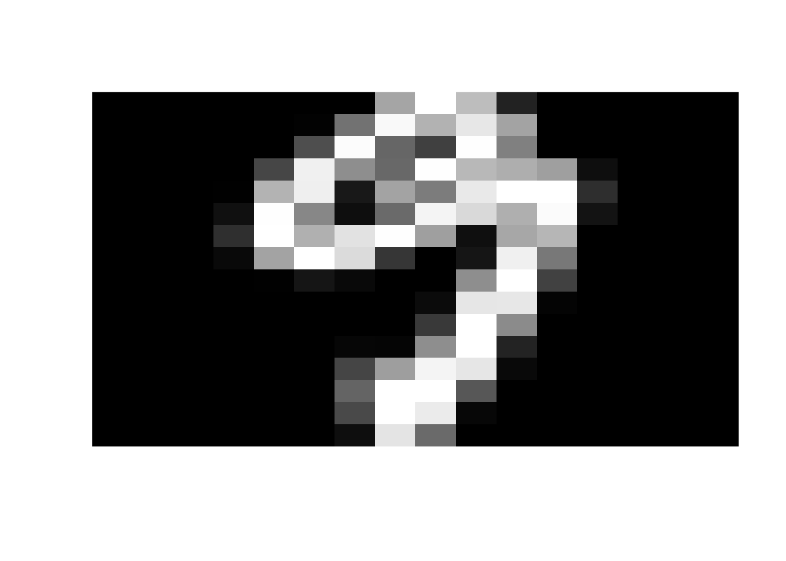
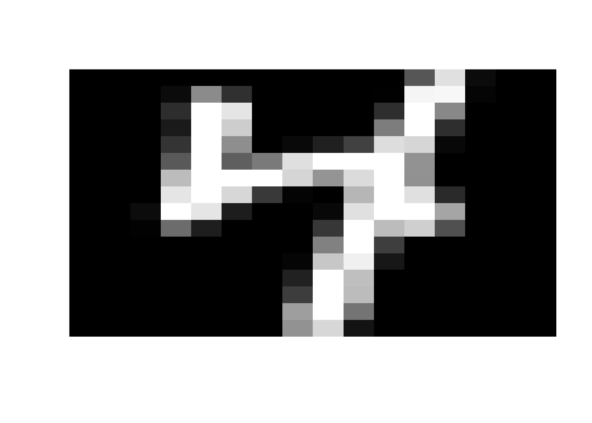

Vector 25 Digit Recognition
Machine Learning has become a big part of our daily experience. When my phone suggests that it’s time for bed, or volunteers how long my today’s commute will be, I am benefiting from machine learning. My phone has learned my patterns and is predicting what might be useful for me today based on past data.
Rather than being “told” the answer up front, a machine learning algorithm learns what to do by analyzing training data. The algorithm then uses patterns to decide what to do with new data. In other words, these algorithms learn from experience, just like humans do. That’s why machine learning falls under the umbrella of artificial intelligence.
And guess what sits at the heart of machine learning? That’s right: linear algebra. Today we will create a rudimentary machine learning algorithm using the dot product in a high-dimensional space.
25.1 US Post Office Zip Code Data
We will look at a classic machine learning problem: identifying hand-written digits. Our data comes from the U.S. Postal Service: each digit comes zip codes automatically scanned from envelopes. I found this data at this Machine Learning course page at Stanford, but it originates from the neural network group at AT&T research labs. I’ve made a copy of the data, and pre-processed the training data (to speed things up for us).
Let’s load the data and print out the first 10 rows and columns of the test data.
library(readr)
require(pracma)
digit.test.file = 'https://raw.github.com/mathbeveridge/math236_f20//main/data/digit-test.csv'
digit.centroids.file = 'https://raw.github.com/mathbeveridge/math236_f20//main/data/digit-centroid.csv'
test <- data.matrix(read_csv(digit.test.file, col_names = FALSE))
centroids <- data.matrix(read_csv(digit.centroids.file, col_names = FALSE))
# take the transpose so that we can deal with column vectors (which is what we are used to)
test=t(test)
centroids=t(centroids)
dim(test)## [1] 257 2007## [,1] [,2] [,3] [,4] [,5] [,6] [,7] [,8] [,9] [,10]
## X1 9.000 6 3.000 6 6.000 0.000 0.000 0.000 6.000 9.000
## X2 -1.000 -1 -1.000 -1 -1.000 -1.000 -1.000 -1.000 -1.000 -1.000
## X3 -1.000 -1 -1.000 -1 -1.000 -1.000 -1.000 -1.000 -1.000 -1.000
## X4 -1.000 -1 -1.000 -1 -1.000 -1.000 -1.000 -1.000 -1.000 -1.000
## X5 -1.000 -1 -0.593 -1 -1.000 -1.000 -1.000 -1.000 -1.000 -1.000
## X6 -1.000 -1 0.700 -1 -1.000 -1.000 -1.000 -1.000 -1.000 -1.000
## X7 -0.948 -1 1.000 -1 -1.000 -1.000 -0.785 -0.914 -1.000 -0.904
## X8 -0.561 -1 1.000 -1 -1.000 0.195 0.775 -0.688 -1.000 -0.060
## X9 0.148 -1 1.000 -1 -0.858 1.000 0.268 -0.736 -0.761 0.638
## X10 0.384 -1 1.000 -1 -0.106 0.054 -1.000 0.956 0.438 0.678The data set has 257 rows and 2007 columns. Each column of the data corresponds to a hand-written digit. So the test data has 2007 hand-written digits.
25.1.1 Visualizing the Data
Here is how the data is formatted.
- The first value in each column tells you the correct digit. Looking at the data above, we see that the first ten hand-written digits are \(9,6,3,6,6,0,0,0,6,9\).
- The remaining 256 values in each column correspond to a grayscale image of the digit.
We must reshape this \(256 \times 1\) column vector into a \(16 \times 16\) matrix in order to display it. The following code will display the handwritten image for a given column. (Note: You don’t have to understand this code.)
# Takes in a vector of length 257 and creates an image form entries 2:257
# digitcol: a 257 x 1 vector. The first entry is the digit classification. The remaining 256 entries are the 16 x 16 image.
plot_digit <- function(digitcol) {
img = digitcol[2:257]
dim(img) <- c(16, 16)
img = img[,ncol(img):1 ]
image(img, axes = FALSE, col = grey(seq(0, 1, length = 256)))
}Now let’s display a few random digits from the test dataset. Feel free to re-run this block a few times. You’ll see different examples each time!
samp = sample(1:dim(test)[2], 6, replace=FALSE)
for (i in 1:6) {
print(test[1,samp[i]])
plot_digit(test[,samp[i]])
}## X1
## 0## X1
## 6## X1
## 9
## X1
## 5## X1
## 2## X1
## 2
Next, let’s talk about our training data. The original training data has 7291 different digits. Different machine learning techniques will use this data in different ways. But each of them follows the same idea:
- Define a measure of “closenesss” to the training data of known digits.
- Then compare the new (unknown) digits and categorize it according to the best fit to the training data.
Our goal today is to highlight the role of linear algebra, not come up with a high-performance algorithm. So we will simplify our training set. I have pre-processed the 7291 training digits and found the “average” vector for each digit. We will refer to these 10 training vectors as centroids since we are finding the vector in the center of all the training digits of each type. Since these are averages, when we plot them, they will look like blurry versions of the actual digit. Let’s look.


25.1.2 Algorithm Overview
Here is our simple machine learning algorithm. For each test digit:
- Find the centroid that is closest to that digit.
- Classify the test digit as the same type as that centroid.
We will consider two definitions of “closeness.” Both are calculated using the dot product!
- The distance between the vectors in \(\mathbb{R}^{256}\). This Euclidean distance or Pythagorean distance is probably what you were thinking of when I started talking about distance in high dimensions.
- The angle between the vectors in \(\mathbb{R}^{256}\). Interesting! Does this surprise you? Why is this a reasonable way to measure distance? Well, span is one of the two fundamental characteristics of linear algebra (the other is linear independence). By measuring the angle between the vectors, we have a notion of distance between the span of each vector. In other words, the angle measures the distance between a pair of one-dimensional subspaces. This measure is known as cosine similarity.
So let’s get started.
Here is the good news: I’ve written the code to process all 2007 of the digits and then compare the classification to the truth. The results are then presented a matrix whose \((i,j)\)-th entry counts the number of time digit \(i\) was classified as digit \(j\). (So we hope that the diagonal entries will be big!)
Here’s the even better news: I’ve left three functions for you to implement using the dot product.
25.2 Magnitude, Distance and Angle
Here are the three methods that you must implement:
get_magnitude(colvec)get_distance(colvec1, colvec2)get_angle(colvec1, colvec2)
Implement these methods according to the definitions:
\[
\| \mathsf{v} \| = \sqrt{ \mathsf{v} \cdot \mathsf{v}}, \qquad
d(\mathsf{v}, \mathsf{w}) = \| \mathsf{v} - \mathsf{w} \|, \qquad
\theta = \cos^{-1} \left( \frac{\mathsf{v} \cdot \mathsf{w}}{\| \mathsf{v} \| \, \| \mathsf{w} \|} \right).
\]
Note: The R command length(vec) returns the number of entries in the vector vec. To avoid confusion, we use “magnitude” to refer to the geometric length of a vector.
Here are some R functions that you will need.
- The dot product of two column vectors
colvec1andcolvec2is calculated byt(colvec1) %*% colvec2. Here we are tranposingcolvec1to turn it into a row vector. - The square root of
yis calculated bysqrt(y). - The inverse cosine of
xis calculated byacos(x).
get_magnitude <- function(colvec) {
# replace with your implementation
len = sqrt(t(colvec) %*% colvec)
return (len)
}
get_distance <- function(colvec1, colvec2) {
v = colvec1 - colvec2
dist = get_magnitude(v)
return (dist)
}
get_angle <- function(colvec1, colvec2) {
dotprod = t(colvec1) %*% colvec2
len1 = get_magnitude(colvec1)
len2 = get_magnitude(colvec2)
val = dotprod / (len1 * len2)
angle = acos(val)
return (angle)
} Here is some test code you can use to confirm that your implementations are correct.
check_equal <- function(val1, val2) {
diff = zapsmall(val1 - val2)
if (diff^1 > 0.001) {
sprintf('fail %f %f', val1, val2)
} else {
print('pass')
}
}
print('get_magnitude')## [1] "get_magnitude"## [1] "pass"## [1] "pass"## [1] "pass"## [1] "get_dist"## [1] "pass"## [1] "pass"## [1] "pass"## [1] "get_angle"## [1] "pass"## [1] "pass"## [1] "pass"25.3 Machine Learning Algorithms
Once your magnitude, distance and angle code is working, you are ready to try out our two rudimentary machine learning algorithms! You will find that each of them does okay (but not great) for this data set. Both get around \(80\%\) of the digits correct. (A good machine learning algorithm can get \(98\%\) correct.)
Run the code below and look at the output. Discuss the following questions
- Which digits are most commonly mistaken for one another?
- Which algorithm does better: closest by distance or closest by angle?
- We turned the training data into a single centroid and then used that to measure distances. A better algorithm would make use of all of the training points during the classification. Discuss what improvements you would try instead of using the centroids.
25.3.1 Get Closest by Distance
# Finds closest centroid to the given data
# data - a column vector of length 257. the first entry is the actual digit. the remaining 256 are the data
# centroids - a 257 x 10 matrix. Column j is the centroid of digit j-1.
get_closest_by_distance <- function(data, centroids) {
idx = 0
min_dist = 1024
for (i in 1:10) {
colvec1 = centroids[2:257,i]
colvec2 = data[2:257]
dist = get_distance(colvec1, colvec2)
if (dist < min_dist) {
idx = i
min_dist = dist
}
}
return (idx)
}
results = matrix(0, nrow=10, ncol=10)
# try to match each column of the test data
for (i in 1:dim(test)[2]) {
true_digit = data.matrix(test[1, i]) + 1
digit_data = data.matrix(test[,i])
matched_digit = get_closest_by_distance(digit_data, centroids)
results[true_digit,matched_digit] = results[true_digit,matched_digit]+1
}
labels=c(0:9)
colnames(results) <- labels
rownames(results) <- labels
results## 0 1 2 3 4 5 6 7 8 9
## 0 297 0 2 3 4 2 39 1 10 1
## 1 0 259 0 1 2 0 2 0 0 0
## 2 6 0 145 8 17 3 2 2 15 0
## 3 6 0 4 131 1 15 0 0 7 2
## 4 1 6 5 0 150 1 5 2 2 28
## 5 10 0 0 8 6 123 0 0 6 7
## 6 14 0 4 0 4 4 143 0 1 0
## 7 0 2 2 0 8 0 0 117 2 16
## 8 4 2 3 11 7 6 0 1 128 4
## 9 0 4 0 0 16 1 0 11 4 141## [1] "matched: 81.415047 percent"25.3.2 Get Closest by Angle
get_closest_angle <- function(data, centroids) {
idx = 0
minangle = pi
for (i in 1:10) {
angle = get_angle(data[2:257,1], centroids[2:257,i])
if (angle < minangle) {
idx = i
minangle = angle
}
}
return (idx)
}
results = matrix(0, nrow=10, ncol=10)
for (i in 1:dim(test)[2]) {
true_digit = data.matrix(test[1, i]) + 1
digit_data = data.matrix(test[, i])
matched_digit = get_closest_angle(digit_data, centroids)
results[true_digit,matched_digit] = results[true_digit,matched_digit]+1
}
labels=c(0:9)
colnames(results) <- labels
rownames(results) <- labels
results## 0 1 2 3 4 5 6 7 8 9
## 0 298 0 1 3 4 1 39 1 11 1
## 1 0 260 0 1 2 0 1 0 0 0
## 2 6 7 135 9 16 3 2 5 15 0
## 3 6 1 3 129 0 15 0 3 7 2
## 4 1 13 4 0 147 1 4 2 1 27
## 5 10 2 0 11 6 120 0 0 4 7
## 6 12 0 2 0 5 3 147 0 1 0
## 7 0 3 2 0 7 0 0 118 1 16
## 8 4 3 1 12 7 5 0 2 127 5
## 9 0 9 0 0 14 1 0 12 3 138## [1] "matched: 80.667663 percent"